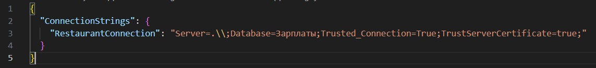

Рисунок 2 - Кнопка открытия папки приложения
Строка подключения к базе данных в приложении находится в файле "appsettings.json" (рис. 1).

Рисунок 1 - Строка подключения к базе данных в приложении
Этот файл находится в папке с приложением, которую можно открыть через окно авторизации (рис. 2).
Рисунок 2 - Кнопка открытия папки приложения
В заготовленной строке подключения есть следующие элементы: